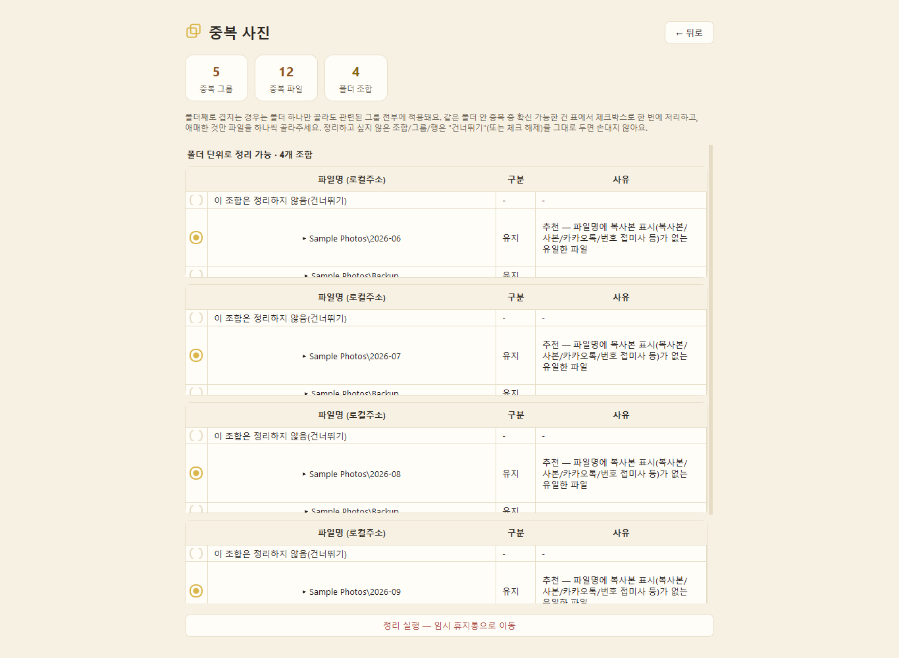

윈도우에서 중복·유사 사진을 찾아 정리하는 방법
휴대폰 사진을 PC에 여러 번 백업하다 보면 같은 파일이 여러 폴더에 쌓입니다. 연사나 메신저로 받은 사본까지 섞여 있다면, 같은 파일을 먼저 정리한 뒤 비슷한 사진에서 남길 컷을 고르면 편합니다.
1. 정리할 폴더부터 고르세요
픽메딕 데스크톱에서 검사할 사진 폴더를 선택하세요. 처음에는 여행 한 번이나 한 달치처럼 범위가 작은 폴더로 시작하면 결과를 검토하기 쉽습니다.
2. 같은 파일을 그룹별로 확인하세요
중복 사진 결과를 열고 그룹별 파일 경로를 확인하세요. 이름이 달라도 내용이 같은 사본이 있을 수 있습니다. 원본을 보관할 폴더에 있는 파일을 남기고, 다른 사본은 경로를 확인한 뒤 정리하세요.

3. 비슷한 사진은 확대해서 비교하세요
연속 촬영한 사진은 구도가 비슷해도 표정이나 초점이 다를 수 있습니다. 유사 사진 그룹에서는 얼굴과 초점, 해상도를 확인한 뒤 남길 컷을 고르세요. 편집본과 원본을 둘 다 쓸 계획이라면 함께 보관하고, 정리 전에는 선택한 파일 목록을 한 번 더 확인하세요.